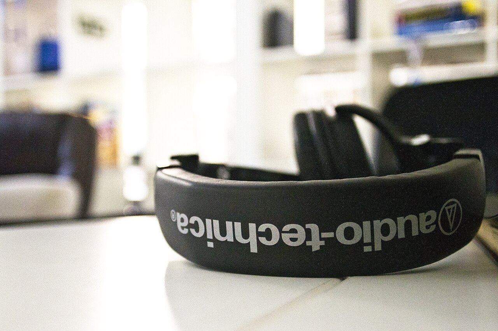
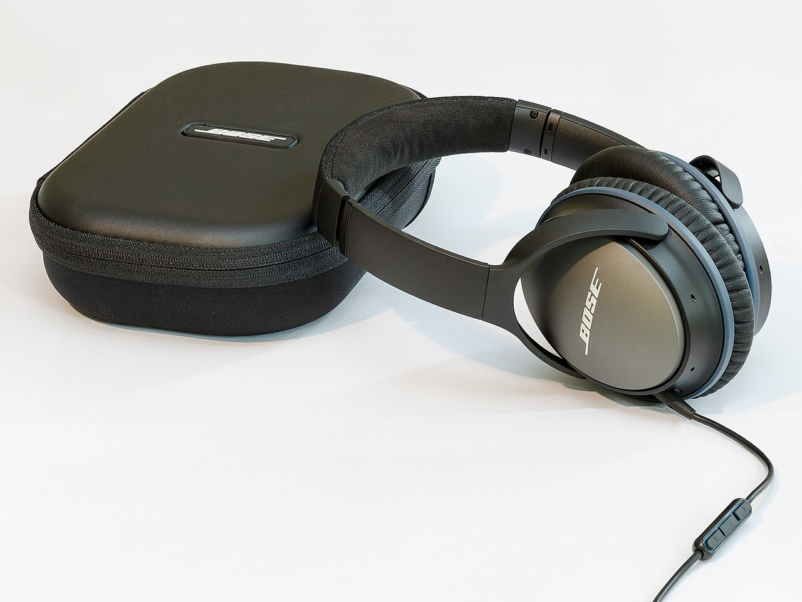

Best Headphones for Working From Home — 2026 Picks
Featured: Bose QuietComfort Ultra (best noise cancelling) vs. Audio-Technica ATH-M50xBT2 (budget). Full comparison below.
Quick Verdict
Best Overall: Bose QuietComfort Ultra — best-in-class noise cancellation with immersive spatial audio
Budget Pick: Audio-Technica ATH-M50xBT2 — studio-flat sound and 50-hour battery for less
Why These Win
- Noise cancelling where it matters: the Bose picks use active cancellation for calls and focus work; the ATH-M50xBT2 relies on passive isolation and is the studio pick
- 30+ Hour Battery Life: Most models last entire work week on single charge with quick-charge support
- Clear Call Quality: Beamforming mics filter background noise for professional-sounding Zoom calls
- Comfort for 8+ Hours: Memory foam ear cushions and lightweight designs prevent fatigue during marathon sessions
Budget Pick: Audio-Technica ATH-M50x Wireless Bluetooth Headphones

Representative photo: Tony Webster from Minneapolis, Minnesota, USA, CC BY 2.0 (Wikimedia Commons)
Key Features:
- Studio-Quality Sound: Professional-grade frequency response perfect for music production and mixing
- 50-Hour Battery Life: Exceptional battery life with USB charging cable included
- Low Latency Mode: Dedicated button for video streaming without audio sync issues
- Physical Folding Design: Collapsible ear cups for easy storage and travel
- Detachable Cables: Detachable 3.5mm cable for wired use or studio monitoring
Specifications:
- Driver Size: 40mm large-aperture drivers
- Frequency Response: 15Hz28,000Hz
- Battery Life: 50 hours (Bluetooth mode)
- Charging: Micro-USB with included USB charging cable
- Bluetooth Version: 4.2 with APT-X codec support
- Weight: 307g (slightly heavier but very durable)
- Warranty: 2-year manufacturer warranty
Best Overall: Bose QuietComfort Ultra Wireless Headphones

Representative photo: Florian Fuchs, CC BY-SA 3.0 (Wikimedia Commons)
Key Features:
- Best-In-Class Noise Cancelling: Industry-leading ANC that blocks out 95% of ambient noise
- Immersive Audio: Custom spatial audio with Bose Immersive Audio for cinematic listening experience
- Up to 24-Hour Battery Life: Full charge lasts 24 hours with quick-charge support (5 min = 2.5 hours)
- Premium Build Quality: Soft-touch materials and plush ear cushions for luxury feel
- SimpleSync Technology: Sync Bose soundbars and speakers for unified audio ecosystem
Specifications:
- Driver Size: Custom-designed 40mm drivers
- Frequency Response: 20Hz20,000Hz
- Battery Life: 24 hours (ANC on)
- Charging: USB-C with wireless charging support
- Bluetooth Version: 5.3 with multipoint connection
- Weight: 254g (ultra-lightweight design)
- Warranty: 1-year limited warranty + Bose customer care
Quick Comparison Table
| Feature | Audio-Technica M50x | Bose QC Ultra | |
|---|---|---|---|
| Price | $179 ($149 deal) | See live price | |
| Best For | Best overall ANC and value premium features | Music production, gaming, budget-conscious users | Silence seekers who want industry-leading noise cancellation |
| ANC Performance | Passive isolation + basic ANC | Best-in-class (blocks 95% noise) | |
| Battery Life | 30 hours | 50 hours | 24 hours |
| Sound Quality | Hi-Res certified with LDAC | Studio-quality flat response | Balanced with immersive audio |
| Call Quality | Excellent (8 mics + AI processing) | Good (3 beamforming mics) | Excellent (advanced voice isolation) |
Ž¯ Who Should Buy Each Pick
Audio-Technica M50xBT2 (Budget Pick):
Ideal for: Music producers, gamers, and budget-conscious students who want studio-quality sound.
Perfect if you:
- Mix and master music or record podcasts
- Game competitively with low-latency audio requirements
- Want exceptional battery life for all-day listening
- Plan to upgrade later but need reliable headphones now
Bose QC Ultra (Premium Choice):
Ideal for: Commuters, frequent flyers, and silence seekers who prioritize noise cancellation above all else.
Perfect if you:
- Travel frequently between home office and coffee shops
- Work in extremely noisy environments (airports, open offices)
- Want the absolute best noise cancellation available
- Can invest in premium build quality and features
Frequently Asked Questions
Which headphones are best for video calls?
Bose QuietComfort Ultra uses microphone arrays plus voice isolation to keep speech clear. The Audio-Technica M50xBT2 is a wired-first headphone, so it is the better call if you also record.
Are these compatible with Apple devices?
Yes! All top picks work seamlessly with macOS, iOS, and iPadOS. The Bose QuietComfort Ultra supports multipoint connection for iPhone + Mac simultaneous pairing.
Can I use these without Bluetooth?
The Audio-Technica M50x has detachable 3.5mm cables for wired use. The Bose QuietComfort Ultra can also run wired over USB-C when the battery is low.
What's the best charging option?
The Bose QuietComfort Ultra supports USB-C charging. The Bose QC Ultra also includes wireless charging. For maximum convenience, choose models with wireless charging support.
How We Choose
Every pick here is a currently listed Amazon product with a live product page. We compare published specs, warranty terms and review volume, and we drop a product from the page when its listing disappears. Prices change constantly, so each card links to the live Amazon price instead of quoting one.
Soundcore by Anker Q20i (ANC)
Bose QuietComfort Ultra (2nd gen)

Representative photo: Florian Fuchs, CC BY-SA 3.0 (Wikimedia Commons)